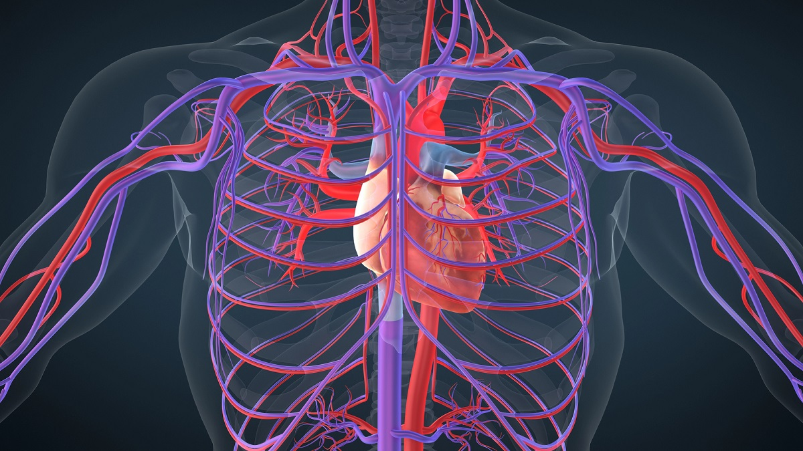

¿Qué son los virus transmitidos por la sangre?
Los virus transmitidos por la sangre son agentes infecciosos que se propagan a través del contacto con sangre u otros fluidos corporales.
Pueden causar infecciones graves y, en muchos casos, enfermedades crónicas si no se tratan adecuadamente.

¿Qué partes del cuerpo afectan?
- Sangre
- Hígado
- Sistema inmunológico
Ejemplos de virus transmitidos por la sangre
VIH
Ataca el sistema inmunológico y debilita las defensas del cuerpo, aumentando el riesgo de infecciones.
Hepatitis B
Provoca inflamación del hígado y puede causar daño hepático crónico.
Hepatitis C
Puede provocar enfermedades graves del hígado si no se detecta a tiempo.
¿Cómo se pueden prevenir?
- No compartir jeringas ni objetos cortopunzantes
- Usar preservativo en relaciones sexuales
- Realizar pruebas médicas periódicas
- Utilizar material médico esterilizado